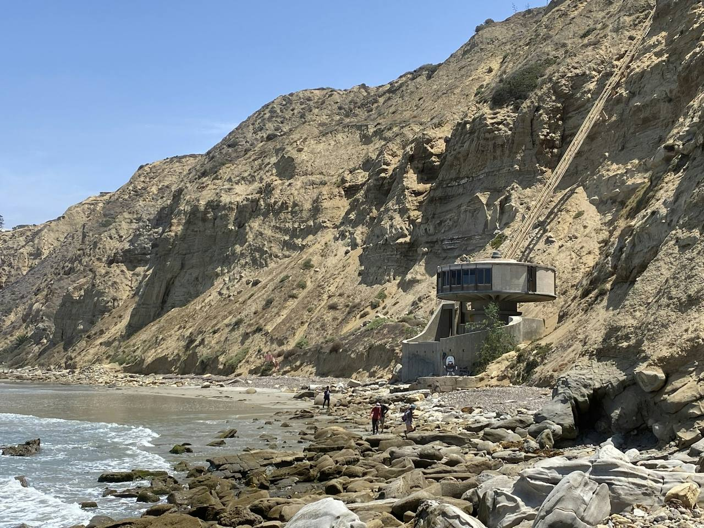
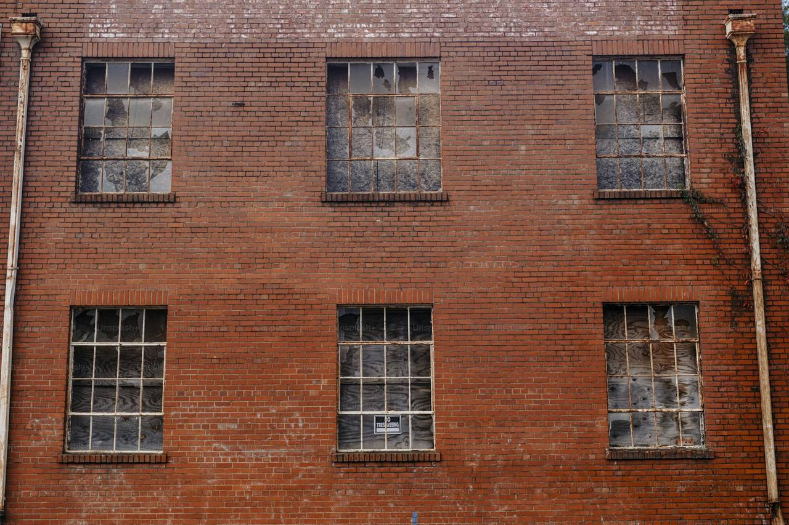

Selected work 2019–2025
Projects
Three buildings, three landscapes. Each one shaped by its ground, its climate, and the people who keep it.
03 built works
Aotearoa New Zealand

01 · Coastal residence
Cliff House
A long cedar-and-glass house held to the edge of a basalt cliff at Omaha, its screens opening the living floor to the sea.
LocationOmaha, Auckland
Completed2024
Area310 m²

02 · Boutique accommodation
Folded Earth
A five-suite vineyard guesthouse in Central Otago, its rammed-earth walls folded around a shaded courtyard and reflecting pool.
LocationBannockburn, Central Otago
Completed2022
Area540 m²

03 · Workplace conversion
Courtyard Office
A 1920s brick warehouse in Auckland re-centred on a planted courtyard, its workspaces turned toward green rather than glass.
LocationEden Terrace, Auckland
Completed2020
Area760 m²